DAVID G. SIMPSON
Personal Web Site
ITALY PHOTO ALBUM: PAGE 1
| 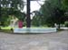 The 91st World Esperanto Congress was held here in Florence, across the street from the Santa Maria Novella train station. |
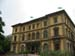 The Palazzo dei Congressi, the main building where most of the activities were held. (Notice the green Esperanto flags flying from the top of the building.) There were two other buildings in the same complex that also hosted some of the activities. My hotel was about a 5-minute walk from here. |
|
| 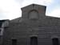 The Basilica di San Lorenzo in Florence. I went to an ecumenical church service here on Sunday. A pastor presided over the service, which was translated into Esperanto by a translator. We sang from Esperanto hymnals that were in the pews. |
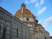 The Duomo (cathedral) of Florence, the Basilica di Santa Maria del Fiore, is a Florence landmark. This view shows the famous red dome designed by Brunelleschi. |
|
| 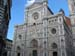 The façade of the Duomo in Florence. |
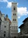 The campanile (bell tower) of the Duomo in Florence. |
|
| 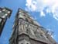 The bell tower, as seen from the base. | 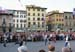 One evening people from the Esperanto congress went out to one of the piazzas, and some local performers came out and provided some entertainment. These guys came out and performed acrobatics with flags, tossing them in the air and catching them. |
|
| 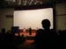 During the Esperanto congress, we had lectures, concerts, plays, and other activities. Here a flutist gives a concert for us. |
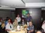 One evening there was a banquet at a restaurant in Florence. Here I'm having dinner with a French couple, a Japanese couple, and another American. We all spoke Esperanto the whole evening, and understood each other perfectly. |
|
| 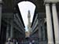 A kind of outdoor corridor, where the famous Uffizi Gallery |
is located. One evening I just sat out on the steps here and listened to a street performer play
classical guitar. I later did get to go inside and see all the art, along with an interesting
exhibit on Leonardo da Vinci.
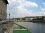 The Arno River, from near the Uffizi Gallery. |
{kind=link}
{kind=link}
{kind=link}
{kind=link}
{kind=link}
{kind=link}
{kind=link}
{kind=link}
{kind=link}
{kind=link}
{kind=link}
{kind=link}
| Page 1 of 5 | Next >>> |
|---|
Contact Information
I may be contacted at: